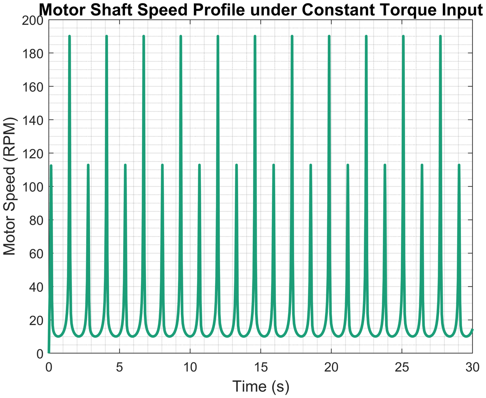
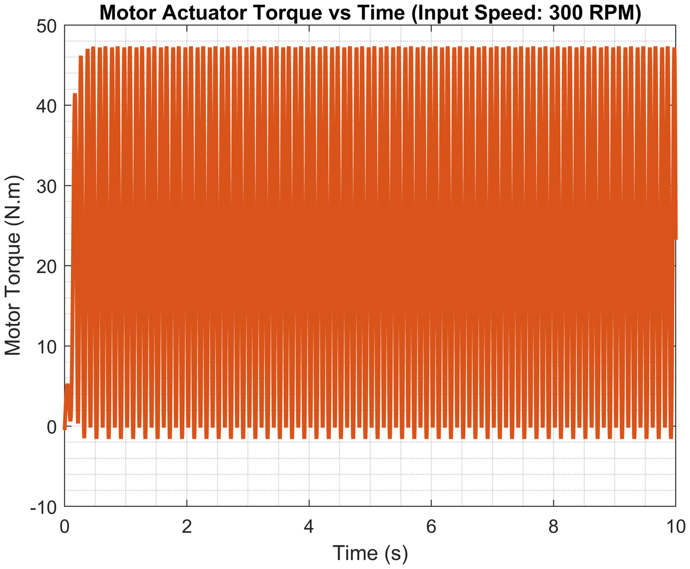

Multibody Dynamics
Pump Mechanism and Flywheel
A Simscape Multibody model of an oscillating-cylinder pump, and a flywheel sized to bring the speed fluctuation under a constant driving torque below the 10 % target.

Overview
What torque does the mechanism demand, how badly does its speed fluctuate under a constant driving torque, and how large must a flywheel be to keep the fluctuation under 10 %?
Approach
- One-degree-of-freedom mechanism: crank, connecting rod with piston, oscillating cylinder; all links steel.
- Fluid load on the 10 cm piston modelled as viscous friction, c = 300 N·s/m.
- Three drives: constant speed, constant torque without and with a flywheel.
Results
| Flywheel sized in MATLAB, enlarged and re-simulated in Simscape | coefficient of fluctuation 5.71 % at a mean speed of 100 rpm |
|---|---|
| Kinematics at 100 and 300 rpm | stroke 14 cm and cylinder swing 82.3°–97.7°, independent of speed |
| Peak torque at 100 / 300 rpm | ≈ 16 / 48 N·m |
| Constant torque, no flywheel | 2 N·m, 10–190 rpm |
| Flywheel | solid steel disc, r = 20 cm, t = 8 cm |
| Driving torque with flywheel | 7.75 N·m for a 100 rpm mean |
From the report



